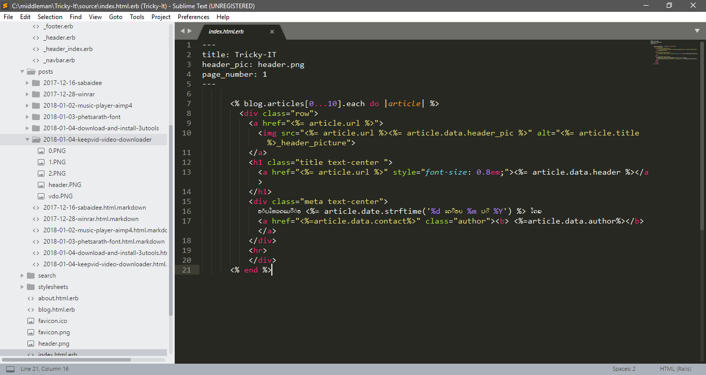

ສະບາຍດີເວັບເພຈນີ້ຈະບອກເລົ່າຄວາມເປັນມາຂອງເວັບ ແລະ ຈຸດປະສົງຂອງເວັບ .ນອກຈາກນັ້ນກໍຈະເລົ່າເຖິງປະຫວັດຜູ້ຂຽນເວັບ
ແມ່ນເວັບທີ່ຈະມາເທັກນິກຕ່າງໆທີ່ກ່ຽວກັບໂປຣແກຣມຄອມພິວເຕີ້ ຫຼືວ່າ ສະໝາດໂຟນ ແນະນຳໂປຣແກຣມແລະວິທີການດາວໂຫລດໂປຣແກຣມ ແນະນຳວິທີແກ້ໄຂບັນຫາທີ່ມັກພົບເຫັນເວລາໃຊ້ຄອມພິວເຕີຫຼື Smartphone.
ເນື້ອຫາທີ່ເອົາຈະເອົາມາຂຽນແມ່ນ ຜູ້ຂຽນໄດ້ພົບບັນຫາດ້ວຍໂຕເອງ ຫຼື ວ່າໝູ່ມາຖາມເວລາຄອມມີບັນຫາ ໂທສະສັບມີບັນຫາ ຄວາມເປັນມາຂອງເວັບ
ຜູ້ທີ່ສ້າງເວັບນີ້ ແມ່ນນັກສຶກສາ ສາຂາເຕັກໂນໂລຊີຂໍ້ມູນຂ່າວສານ(IT) ສຶກສາຢູ່ ປີ 3. ຕອນທີ່ສຶກສາປີ 2 ສຶກສາການຂຽນໂປຣແກຣມຕ່າງໆ ລວມທັ້ງການສ້າງເວັບໄຊລ ແຕ່ວ່າບໍ່ເຄີຍໄດ້ນຳຄວາມຮູ້ທີ່ໄດ້ສຶກສາມານຳໃຊ້ ມີພຽງແຕ່ສ້າງເວັບໄຊລຕາມທີອາຈານໄດ້ມອບໝາຍໃຫ້.
ຈາກນັ້ນໄດ້ໄປອ່ານບົດຄວາມຂອງໂປຣແກຣມເມີຄົນໜື່ງລາວໄດ້ບອກເລົ່າຈຸດເລີມຕົ້ນຂອງລາວໃນການເປັນໂປຣແກຣມເມີ. ຕອນນັ້ນມີຄວາມຄິດວ່າຢາກມີສ້າງເວັບໄຊລເປັນຂອງຕົນເອງ
ເພື່ອເປັນບັນທຶກຈຸດເລີມຕົ້ນການເລີມຂຽນໂປຣແກຣມຂອງຂ້ອຍ ^__^
ຜ່ານໄປ 1 ປີກະບໍ່ໄດ້ເຮັດ. ຕອນນີ້ຮູ້ສຶກເສຍດາຍເວລາຊ່ວງນັ້ນແຮງ ເພາະຫລິ້ນ ເກມ ເບິງ Anime ເບິງໜັງ ມີແຕ່ຄິດວ່າມື້ອື່ນ ຫຼືວ່າເສົາທິດວ່າງໆກ່ອນຈັງເຮັດ ສຸດທ້າຍກະບໍ່ໄດ້ເຮັດ
ຂຶ້ນມາປີ 3 ເດືອນ 10 ປີ 2017 ໄດ້ມີວິຊາທີ່ອາຈານໃຫ້ຈັບກຸ່ມສອງຄົນເລືອກຈະເຮັດຫຍັງກໍໄດ້ມານຳສະເໜີ ໂດຍສິ່ງທີ່ຈະເອົາມານຳສະເໜີຕ້ອງກ່ຽວຂອງກັບສາຂາທີ່ຮຽນຢູ່ ກໍເລີຍເລືອກເອົາສິ່ງທີ່ໄດ້ວາງແຜນໄວ້ແຕ່ບໍ່ໄດ້ເຮັດຈັກເທື່ອມາເປັນຫົວຂໍ້ທີ່ຈະໄປນຳສະເໜີ
ໜ້າທີ 1